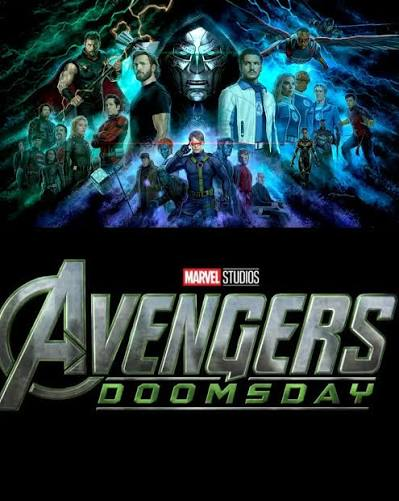
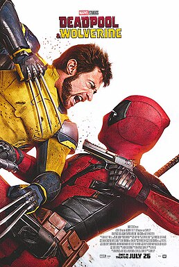
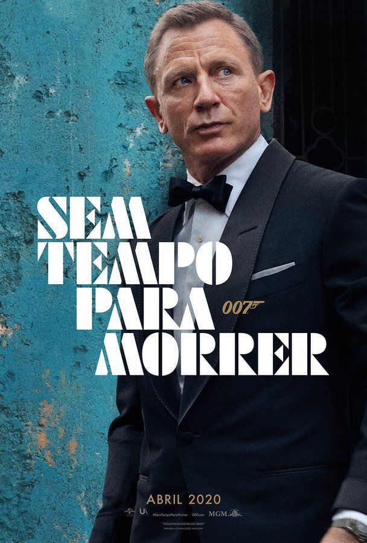
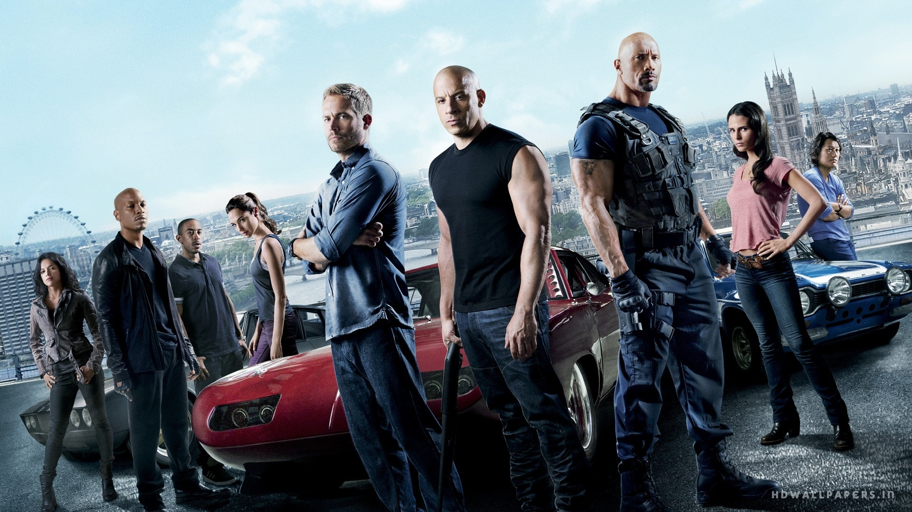
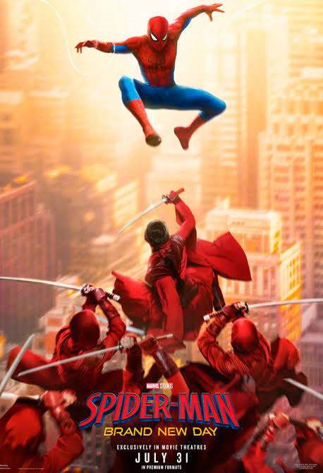
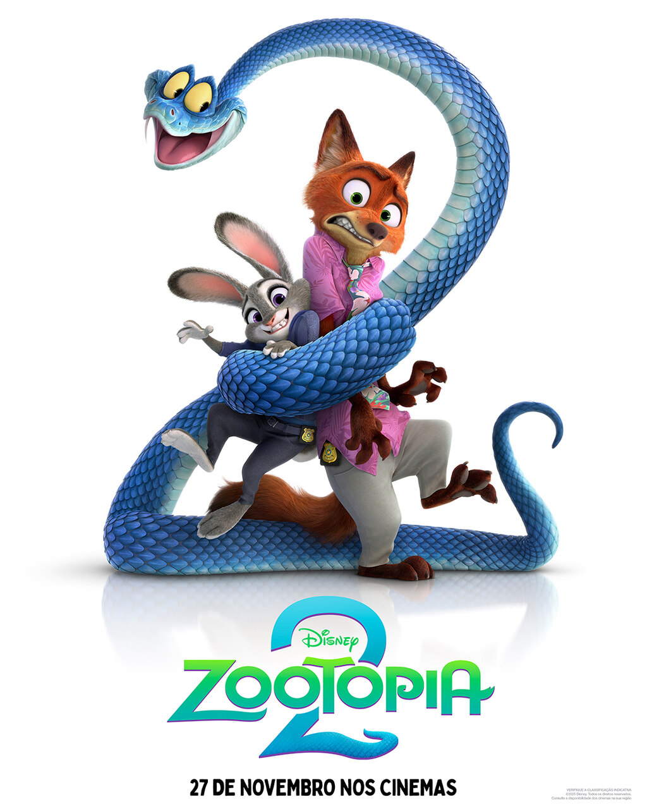

O seu QG para teorias malucas, reviews sinceros e tudo sobre cultura pop.

Teoria MarvelAnalisamos todas as pistas e teorias sobre o retorno do Robert Downey Jr. como Doutor Destino.

Teoria MarvelAnalisamos as pistas do multiverso e o que vem por aí para os mutantes.

Especial CinemaCom as audições rolando, analisamos as teorias e o que esperar da nova fase de 007.

Teoria CinemaAnalisamos os rumores sobre o desfecho da saga de Toretto e a possível volta às corridas de rua.

Teoria MarvelAnalisamos as pistas e os ganchos deixados pelo novo filme do Teioso que estreou este ano.
Voltamos 24 anos no tempo para analisar a história do jovem Haymitch e o Segundo Massacre Quaternário.

Teoria AnimaçãoAnalisamos o mistério envolvendo os répteis, os easter eggs escondidos e os ganchos para a continuação.